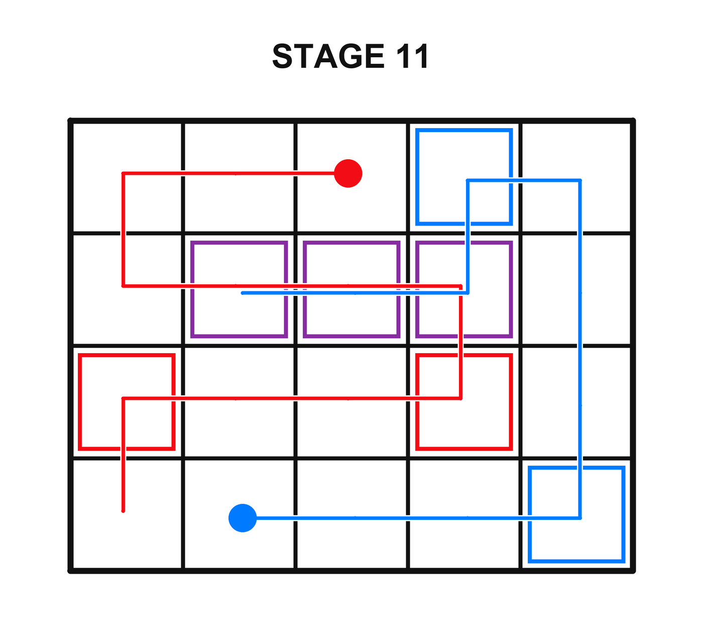
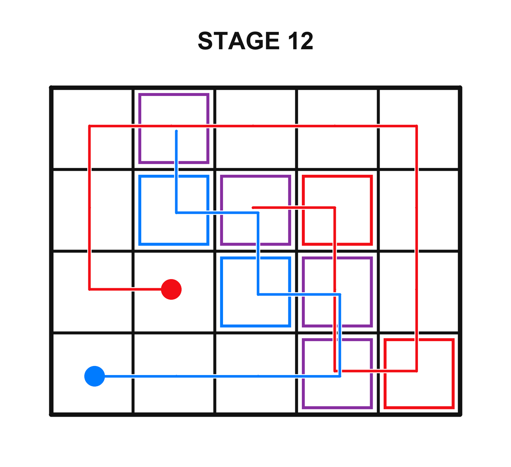
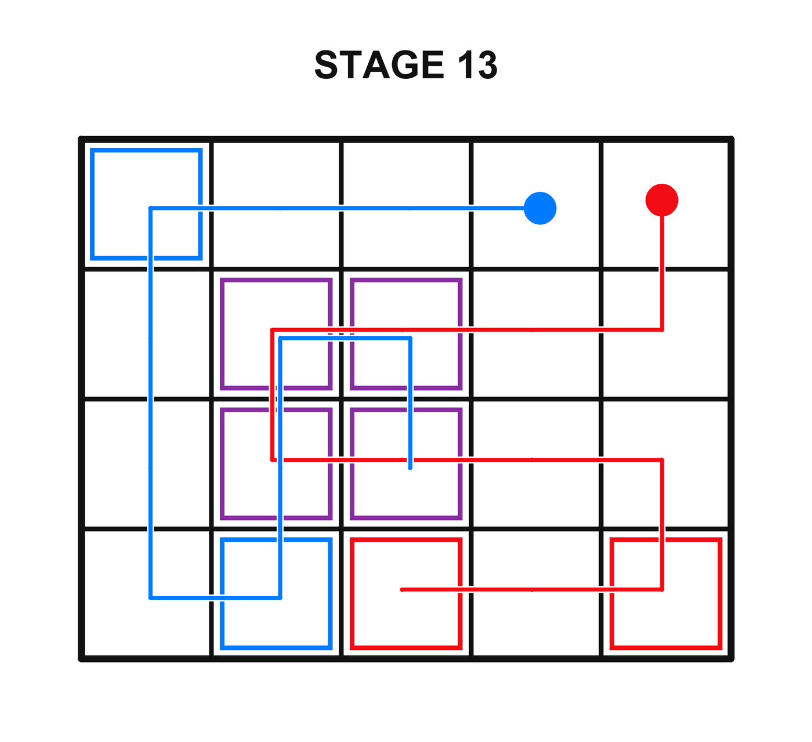
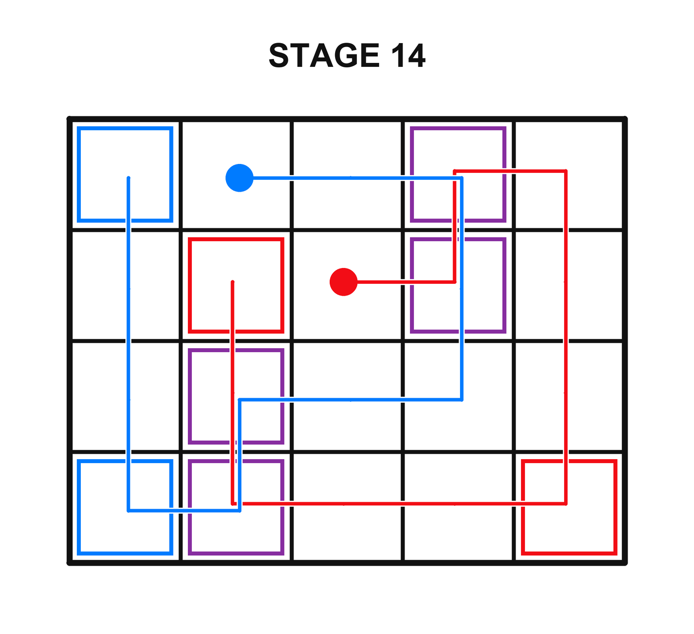
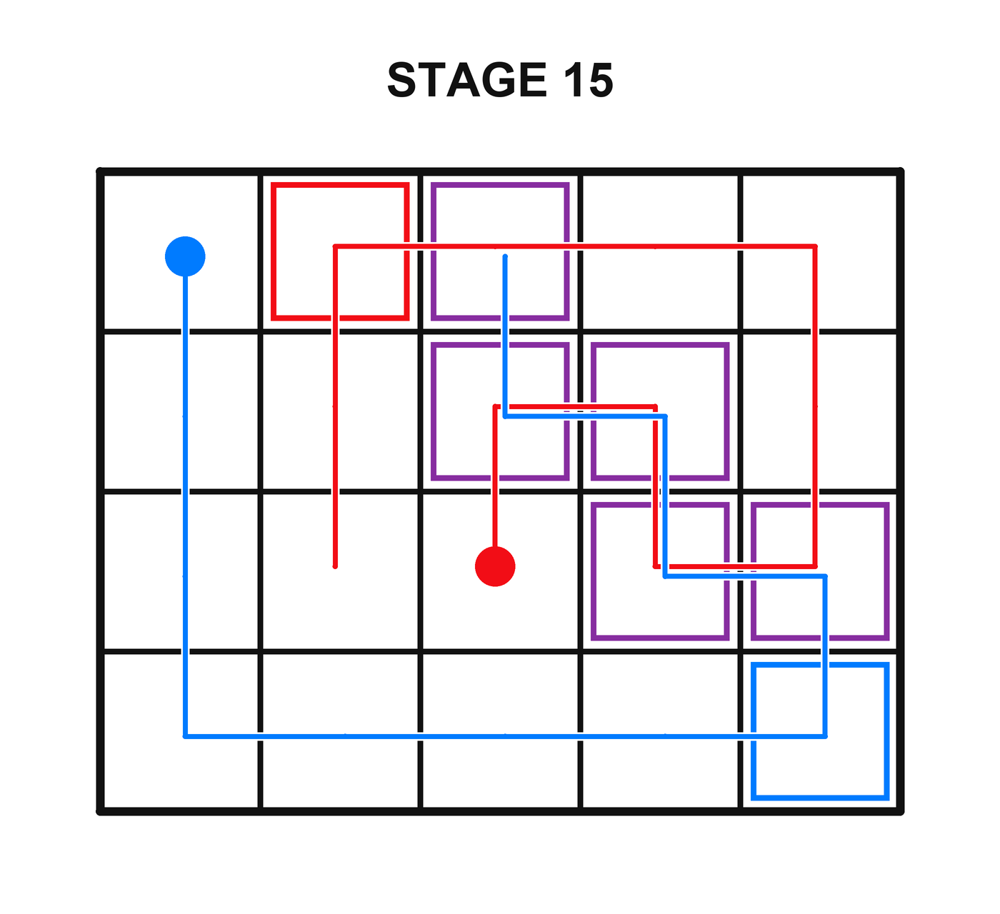
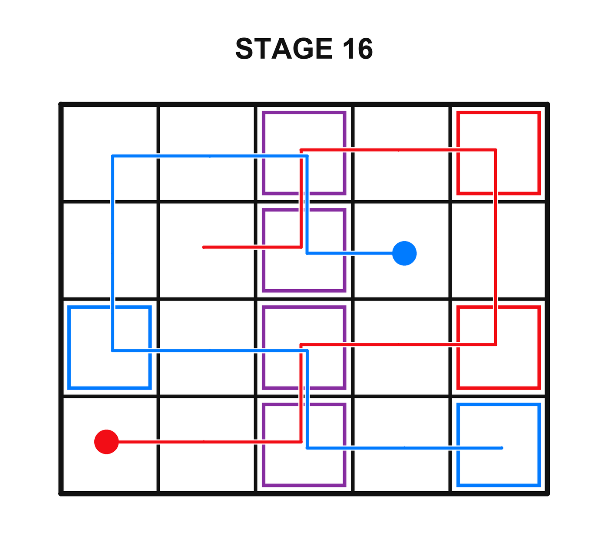
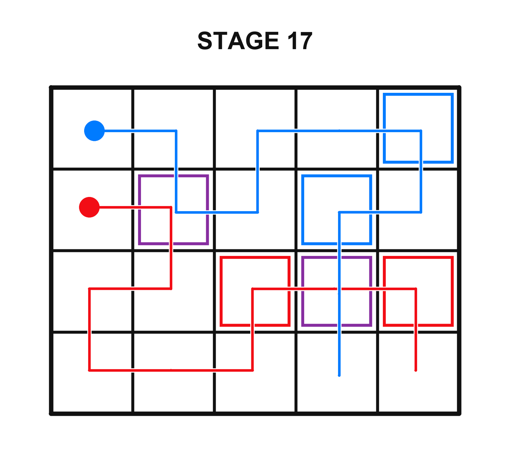
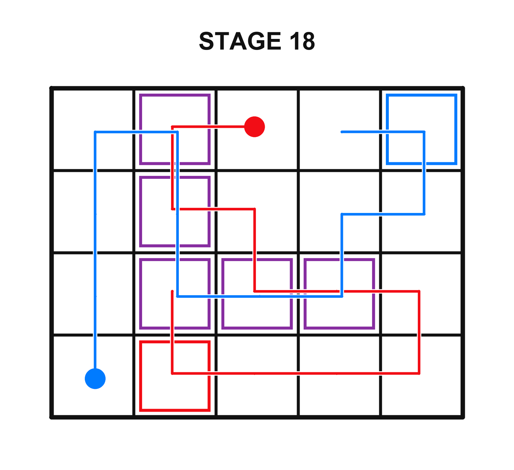
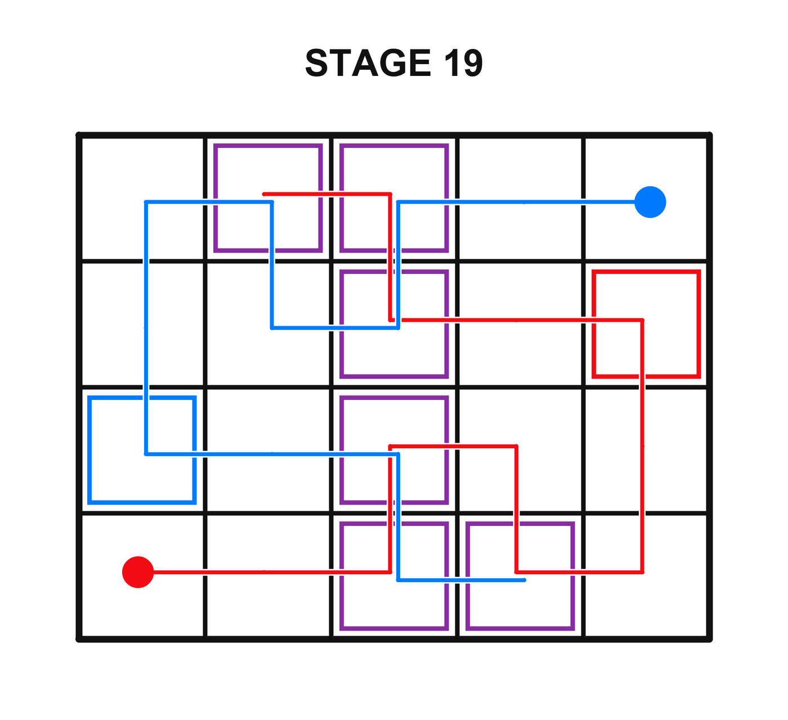
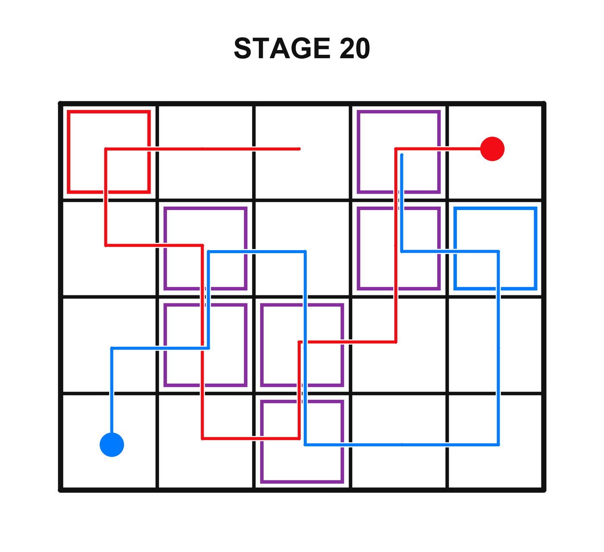

5列×4行。赤と青の開始点から一筆ずつなぞり、全マスを着色します。赤枠・青枠はその単色、紫枠は両方のルートが必要です。各画像をクリックすると原寸で開きます。

横に並ぶ3つの紫マスを、赤と青の両方でつなぐ。
中級目安 · 紫 3マス

斜めに離れた紫マスと下端の縦ゲートをつなぐ。
中級目安 · 紫 4マス

中央の2×2を両色で通り、周囲を単色に塗り分ける。

上下に離れた縦2マスの紫ゲートを通る順番が鍵。

階段状の紫マスをたどりながら、空いた側を埋める。
中級〜上級目安 · 紫 5マス

中央の縦一列を共有し、左右へ折り返す位置を考える。
中級〜上級目安 · 紫 4マス

紫は2マスだけ。長い単色ルートで盤面の取り残しを防ぐ。
中級〜上級目安 · 紫 2マス

L字の混色通路と外側の折り返しを組み合わせる。
上級目安 · 紫 5マス

長い共有通路を使いつつ、上下で別方向に抜ける。
上級目安 · 紫 6マス

離れた縦ゲートと曲がる共有路をつなぐ総合問題。
難易度は目安。全20マスの着色・隣接性・自己再訪なし・色指定への適合を自動検証済み。解答は一例で、唯一解は未検証です。